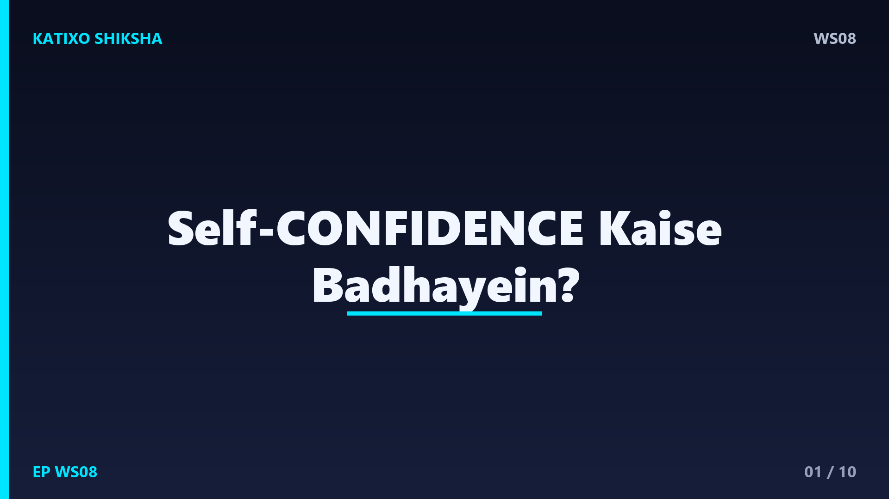
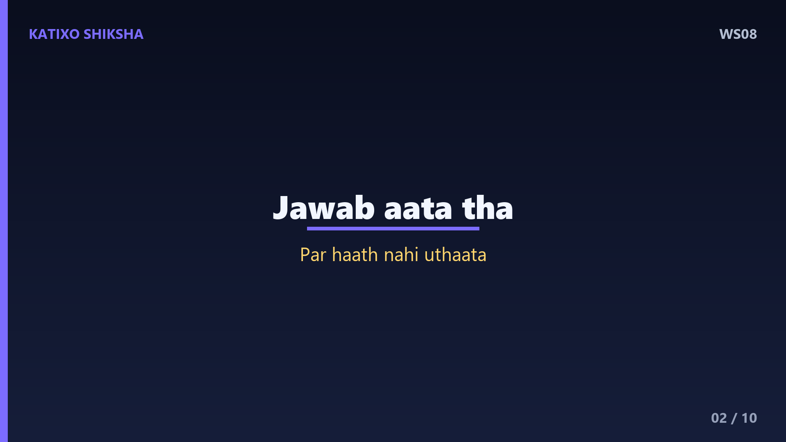
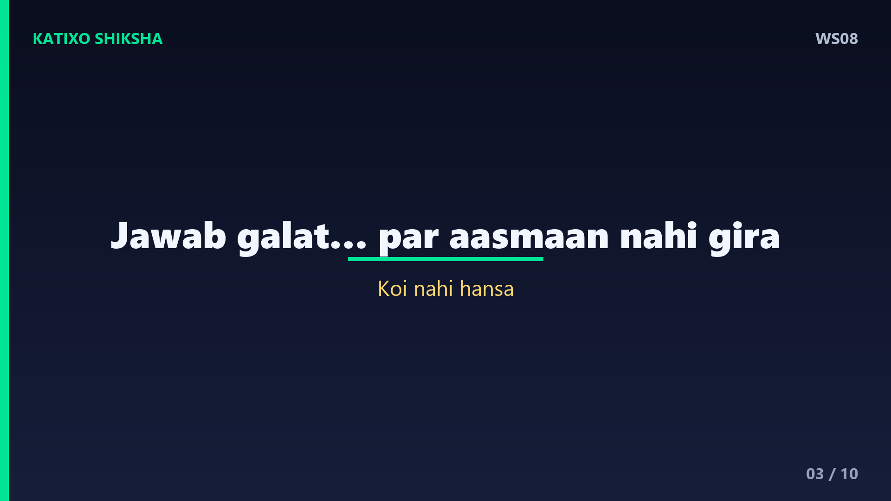
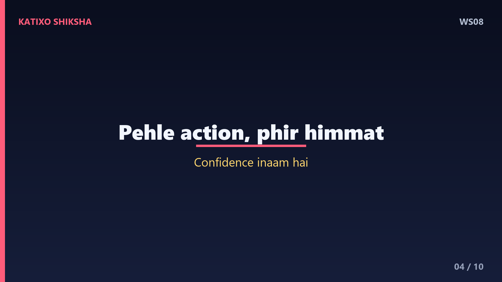
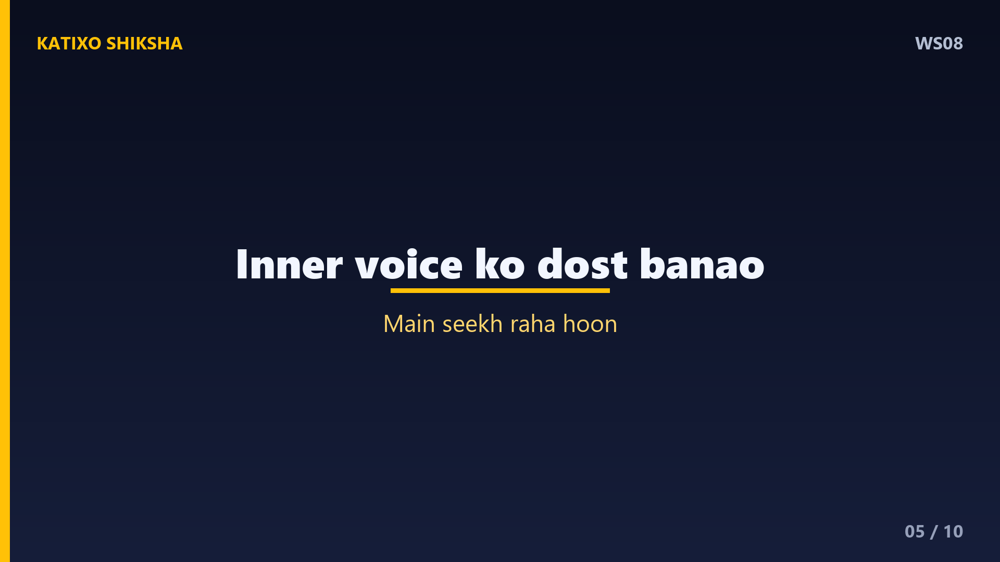
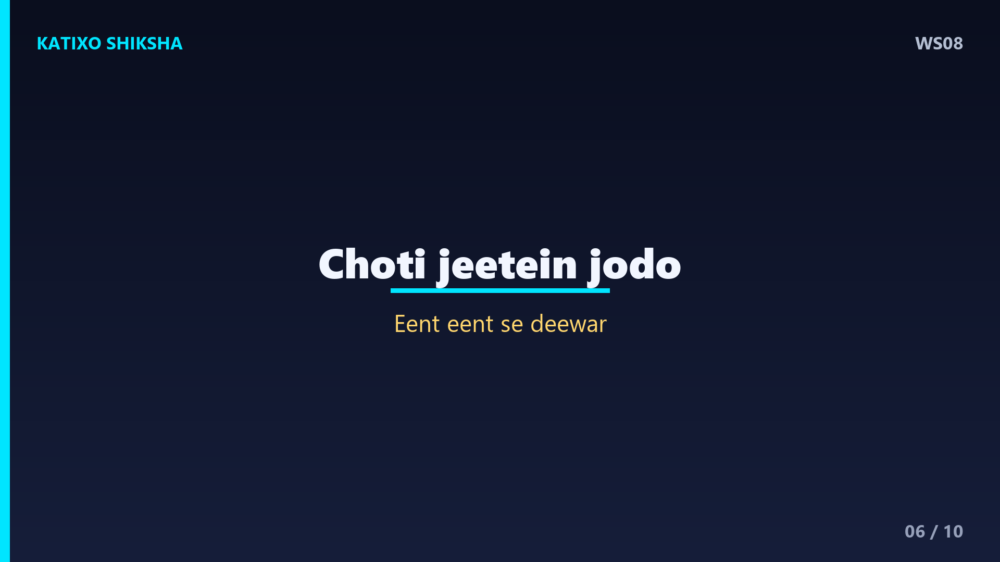
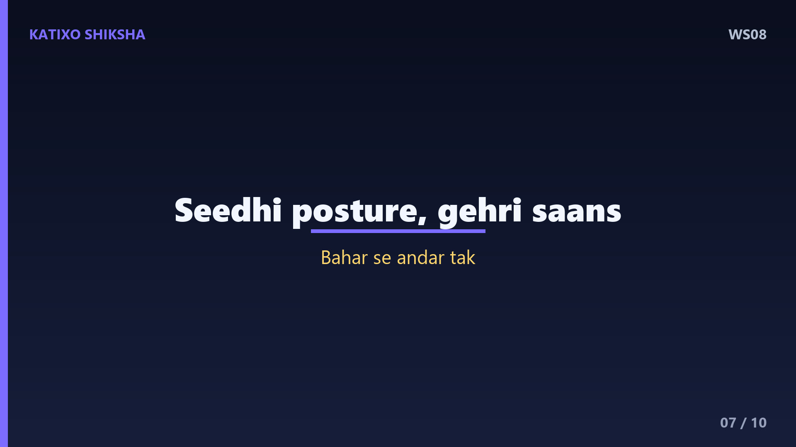
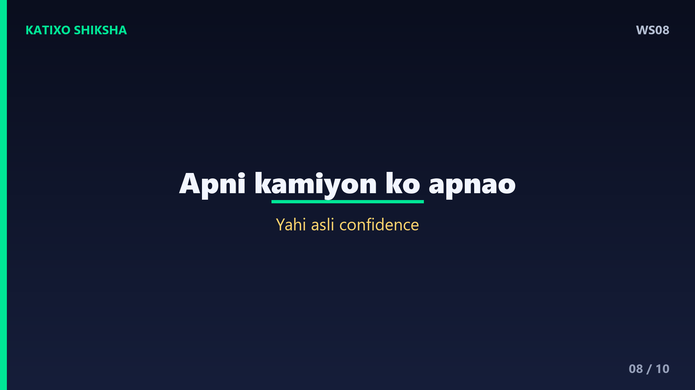
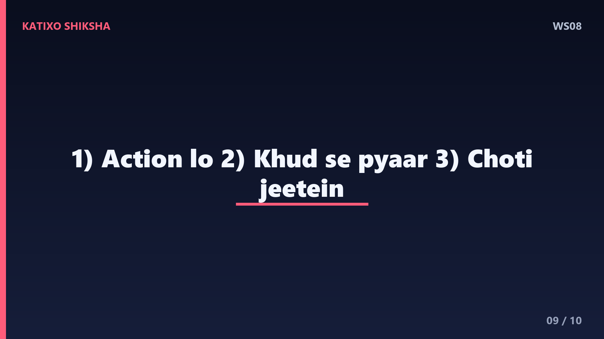

WS08 — Self-Confidence Kaise Badhayein?

Slide 1दोस्तों, क्या कभी ऐसा हुआ है — तुम्हें कुछ कहना था, पर डर के मारे चुप रह गए? कोई मौक़ा सामने था, पर मन ने कहा — तुमसे नहीं होगा? Welcome to Katixo KhojLab. आज हम बात करेंगे उस चीज़ की जो हर सपने की नींव है — self-confidence, यानी ख़ुद पर भरोसा. अच्छी ख़बर ये है — confidence कोई जन्म से मिला हुआ तोहफ़ा नहीं, ये एक skill है जिसे कोई भी सीख सकता है. आज की कहानी तुम्हें ये रास्ता दिखाएगी. चलो शुरू करते हैं।

Slide 2एक लड़का था अर्जुन, जो हमेशा डरा-सहमा रहता था. क्लास में जवाब आता था, पर हाथ नहीं उठाता था — डर लगता था कि लोग हँसेंगे. एक दिन उसके teacher ने उसे एक छोटा सा काम दिया — कहा, कल सिर्फ़ एक बार हाथ उठाना, चाहे जवाब सही हो या ग़लत. अर्जुन घबरा गया, पर उसने हिम्मत की. हाथ उठाया, जवाब ग़लत निकला — पर कुछ ऐसा हुआ जिसकी उसने उम्मीद नहीं की थी।

Slide 3जवाब ग़लत था, पर आसमान नहीं गिरा. कोई नहीं हँसा. teacher ने मुस्कुराकर कहा — कोशिश करने के लिए शाबाश. उस एक पल में अर्जुन को एक बड़ी बात समझ आई — जिस डर ने उसे सालों रोका था, वो असली था ही नहीं. अगले दिन उसने फिर हाथ उठाया, और फिर. धीरे-धीरे डर कम होता गया, और भरोसा बढ़ता गया. कुछ महीनों में वही डरपोक लड़का क्लास का सबसे active student बन गया।

Slide 4Lesson नंबर एक — confidence पहले नहीं आता, action पहले आता है. ज़्यादातर लोग सोचते हैं — पहले मुझमें हिम्मत आए, फिर मैं करूँगा. पर सच इसका उल्टा है. तुम करते हो, इसलिए हिम्मत आती है. हर बार जब तुम डर के बावजूद एक छोटा कदम उठाते हो, तुम्हारा दिमाग सीखता है — अरे, मैं ये कर सकता हूँ. Confidence कोई शर्त नहीं है शुरू करने की — ये इनाम है शुरू करने का।

Slide 5Lesson नंबर दो — अपने आप से जो तुम बोलते हो, वो बहुत मायने रखता है. जो इंसान दिन भर ख़ुद से कहता है — मैं नहीं कर सकता, मैं बेकार हूँ — वो सच में कमज़ोर महसूस करने लगता है. तुम्हारा दिमाग तुम्हारी ही बातों पर यक़ीन करता है. इसलिए अपनी inner voice को बदलो. ग़लती होने पर ख़ुद को कोसने के बजाय कहो — कोई बात नहीं, मैं सीख रहा हूँ. ख़ुद से वैसे बात करो जैसे तुम अपने best friend से करते हो।

Slide 6अब एक practical technique — इसे कहते हैं small wins. Confidence एक दिन में नहीं बनता, छोटी-छोटी जीतों से बनता है. कोई बड़ा लक्ष्य लेकर मत बैठो. उसे छोटे टुकड़ों में बाँटो और एक-एक करके पूरा करो. हर छोटी जीत तुम्हारे दिमाग में एक सबूत जोड़ती है — मैं कर सकता हूँ. जैसे ईंट-ईंट जोड़कर दीवार बनती है, वैसे छोटी जीतें जोड़कर एक मज़बूत आत्मविश्वास बनता है।

Slide 7Technique नंबर दो — body language. Science कहती है कि सिर्फ़ शरीर का तरीक़ा बदलने से तुम्हारा mind भी बदलता है. जब तुम सीधे खड़े होते हो, कंधे पीछे, सिर ऊँचा, और सामने वाले की आँखों में देखकर बात करते हो — तो दिमाग को signal जाता है कि सब ठीक है. एक मुस्कान, एक गहरी साँस, और सीधी posture — ये तीन चीज़ें पल भर में तुम्हें ज़्यादा confident महसूस कराती हैं. बाहर से बदलो, अंदर से मज़बूती आएगी।

Slide 8एक गहरी बात — confidence का मतलब डर का ख़त्म होना नहीं है. बहादुर इंसान को भी डर लगता है, फ़र्क सिर्फ़ इतना है कि वो डर के बावजूद आगे बढ़ता है. और हाँ — असली confidence दूसरों को नीचा दिखाने से नहीं आता, बल्कि अपनी कमियों को स्वीकार करने से आता है. जब तुम ख़ुद को पूरी तरह — अच्छाइयों और कमज़ोरियों के साथ — अपना लेते हो, तब किसी की राय तुम्हें हिला नहीं सकती. यही असली, गहरा आत्मविश्वास है।

Slide 9चलो आज की तीन सबसे बड़ी सीख याद कर लें. पहली — confidence का इंतज़ार मत करो, action लो, हिम्मत अपने आप आएगी. दूसरी — अपनी inner voice को दोस्त बनाओ, ख़ुद को कोसना बंद करो. और तीसरी — छोटी-छोटी जीतें इकट्ठा करो और अपनी body language सीधी रखो. ये तीन बातें धीरे-धीरे तुम्हें एक डरपोक से एक भरोसेमंद इंसान बना देंगी।
Slide 10याद रखना दोस्तों — तुम जितना सोचते हो, उससे कहीं ज़्यादा capable हो. वो आवाज़ जो कहती है तुमसे नहीं होगा — वो झूठ बोलती है. हर बड़ा इंसान कभी डरा हुआ था, बस उन्होंने डर के बावजूद कदम उठाया. आज से एक छोटा सा बहादुरी का काम करो — वो जो तुम्हें डराता है. अगर ये कहानी तुम्हें पसंद आई, तो Like, share, aur Katixo KhojLab ko subscribe karna mat bhoolna. Milte hain agli kahani mein!